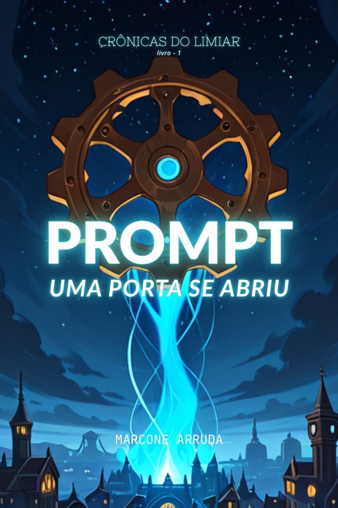

01
O Julgamento do Impossível
Rick está no tribunal, acusado de roubos impossíveis. Mas a verdade é mais estranha do que qualquer acusação.
ATO I

Rick Almeida era apenas um adolescente com um talento improvável: desmontar o futuro a partir do lixo do passado. Em meio a monitores quebrados e placas‑mãe esquecidas no ferro‑velho “Rato Digital”, ele encontrou algo que não pertencia a este tempo — ou a este mundo.
Um dispositivo escuro, quente ao toque, com símbolos que respiravam como constelações vivas. Ele o chamou de P.R.O.M.P.T.
O que começou como uma curiosidade solitária logo se transformou em uma aventura vertiginosa. Com um toque, Rick podia estar na livraria perdida do avô em Lisboa, no Central Park sob a lua nova, ou nas montanhas geladas da Suíça. Mas cada portal aberto deixava um rastro — um eco dimensional que não passou despercebido.
Uma organização sombria, os Colecionadores, monitora essas brechas na realidade. Eles não querem explorar; querem controlar. E Rick, com seu dom intuitivo de dobrar o espaço sem deixar cicatrizes, é a peça que falta no plano mais ambicioso deles: não apenas viajar no espaço, mas reescrever o próprio passado.
Portais que se abrem com a força da intenção e da memória.
O passado não é apenas lembrado — ele pode ser revisitado.
Uma rede de dissidentes luta para proteger o tecido da realidade.

Rick está no tribunal, acusado de roubos impossíveis. Mas a verdade é mais estranha do que qualquer acusação.
ATO INo ferro‑velho, entre sucatas, Rick encontra um dispositivo que muda tudo — e que parece estar vivo.
ATO IO nome do dispositivo revela sua verdadeira natureza — e o perigo que ele representa nas mãos erradas.
ATO ILara e Rick encontram o Limiar, um espaço entre coordenadas onde a resistência pode se reorganizar.
ATO IRick arrisca tudo para salvar Lara das garras dos Colecionadores — e descobre o verdadeiro poder do cristal.
ATO IINo coração do Diapasão, Rick faz a escolha final: destruir ou transformar?
ATO IIEspaço reservado para futuras avaliações de leitores.
— Leitor(a) anônimo(a) — exemplo de layout“Uma história que prende do início ao fim. A mistura de tecnologia e emoção é perfeita.”
— Leitor(a) anônimo(a) — exemplo de layout“PROMPT me fez questionar o que é real e o que é possível. Mal posso esperar pelo próximo livro.”
— Leitor(a) anônimo(a) — exemplo de layout“Personagens cativantes, reviravoltas inteligentes e um universo que você quer explorar.”
Receba o capítulo 1 de PROMPT – Uma Porta Se Abriu diretamente no seu e‑mail. Comece sua viagem pelo Limiar agora mesmo.